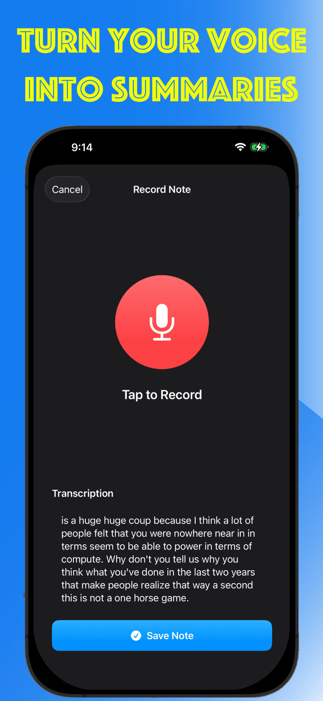
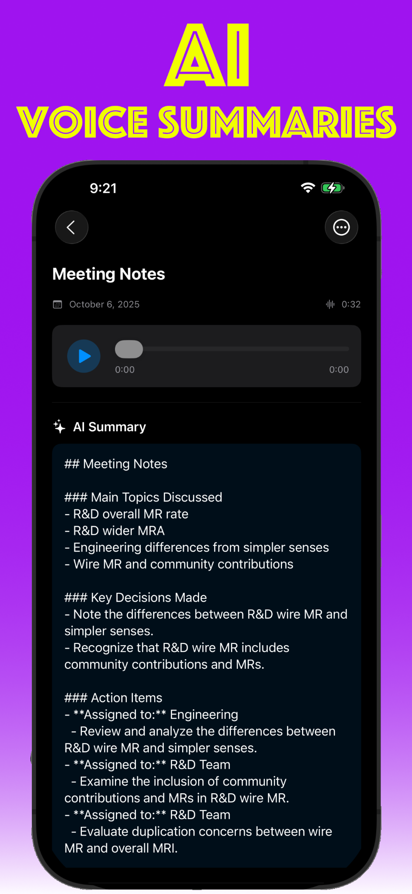

Capture the moment
Record ideas, lectures and meetings with a tap.
YOUR AI VOICE NOTE COMPANION
Turn spoken thoughts into clear, organized notes. Record, transcribe and summarize meetings, lectures and everyday ideas.
Explore VoiceSummary →
A SIMPLER WORKFLOW
Record ideas, lectures and meetings with a tap.
Review your spoken words as editable text.
Use AI summaries to revisit the information that matters.

BUILT FOR EVERYDAY LIFE
Review your recordings and summaries whenever you need them.